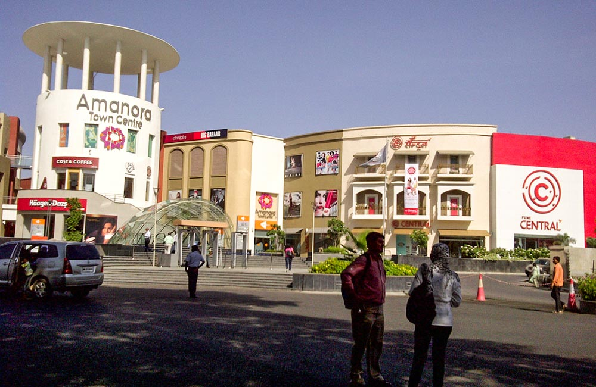

Places to Visit in Pune – Forts and Palaces
- Sinhagad Fort, Pune
Does the idea of visiting a ruined fort appeal to the traveler in you? Then you must pay a visit to Sinhagad Fort, which dates back 2000 years and has been witness to many battles. Today, it may not be in its best shape, but the ruins provide the perfect glimpse into the grandeur of the bygone era. The trek to the fort, nestled on a secluded cliff, is a lovely journey through uninterrupted surroundings.
And the best part? You don’t have to spend a penny to enjoy the beauty of this iconic monument which is often called the Taj Mahal of Mumbai. And the city has many such places that you can enjoy free of cost.
Want to know about more such spots in and around the city where the past comes alive in the form of strong walls and strong watchtowers? Here’s a list of top 15 forts near Pune that you both can explore together.
- Location: Sinhagad Ghat Road, Pune
- Timings: 05:00 am to 06:00 pm; every day
- Entry Fee: Free entry
- Shivneri Fort, Pune
At a distance of about 90 km from Pune, in Junnar, stands the magnificent Shivneri Fort atop a hill. The fort is famous for being the birthplace and training ground of Chhatrapati Shivaji Maharaj, the founder of the Maratha Empire. It was built in 16th-century and had been known for its fortification. Today, it is a popular tourist and picnic destination.
- Location: Junnar, Maharashtra
- Timings: 10:00 AM – 11:00 PM
- Entry Fee: Free
- Saras Baug, Pune

This is a large central park with an 18th-century temple, spacious grassy fields, and pretty water features, which make it ideal for sports, picnics, and leisurely stroll. It is a vast area of picturesque gardens spread across an area of 25 acres of land. You can enter the park via its three gates each of which is topped with white minarets.
Pune holds a plethora of attractions for everyone, regardless of age. So, if you are planning a trip to the city with your kin, you will find a number of destinations to explore and marvel at. Here comes the list of the best places to visit in for a dose of live entertainment.
- Location: Saras Baug, Pune
- Timings: 06:00 AM to 09:00 PM
- Entry Fee: Free
Back To Home